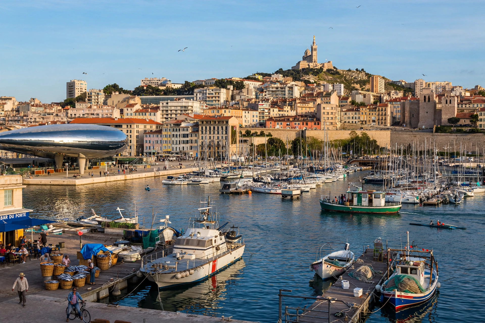

From Wikipedia, the free encyclopedia
| Marseille | |
|---|---|
 | |
| Country | France |
| Region | Provence-Alpes-Côte d'Azur |
| Department | Bouches-du-Rhône (prefecture) |
| Population | ~870,000 (city); ~1.9 million (metro area) |
Marseille is a city in southern France, the prefecture of the department of Bouches-du-Rhône and capital of the Provence-Alpes-Côte d'Azur region. The second-most populous city in France after Paris, it is the country's largest port on the Mediterranean Sea and its oldest city, founded around 600 BC by Greek sailors from Phocaea as the colony of Massalia.
Massalia grew into a major trading hub linking the Mediterranean with Gaul. It came under Roman control in the 1st century BC and later passed through Visigothic, Frankish, and Provençal hands before joining France in 1481. The city gave its name to the French national anthem, "La Marseillaise", sung by volunteers from Marseille who marched on Paris in 1792. In the 19th century the opening of the Suez Canal cemented Marseille's role as France's gateway to its colonial empire.
The city curves around its Old Port (Vieux-Port), guarded by the forts Saint-Jean and Saint-Nicolas. The basilica of Notre-Dame de la Garde overlooks the city from a limestone hill to the south. Offshore lies the Château d'If, the island fortress made famous by Alexandre Dumas's The Count of Monte Cristo. The nearby Calanques National Park protects dramatic limestone inlets. Marseille is also the home of the football club Olympique de Marseille and of the fish stew bouillabaisse.
The Port of Marseille-Fos is one of the Mediterranean's busiest cargo ports. Marseille was a European Capital of Culture in 2013, the year the Mucem museum opened at the Old Port entrance. The city's population is notably cosmopolitan, with large communities of Italian, Armenian, North African, and Comorian origin.